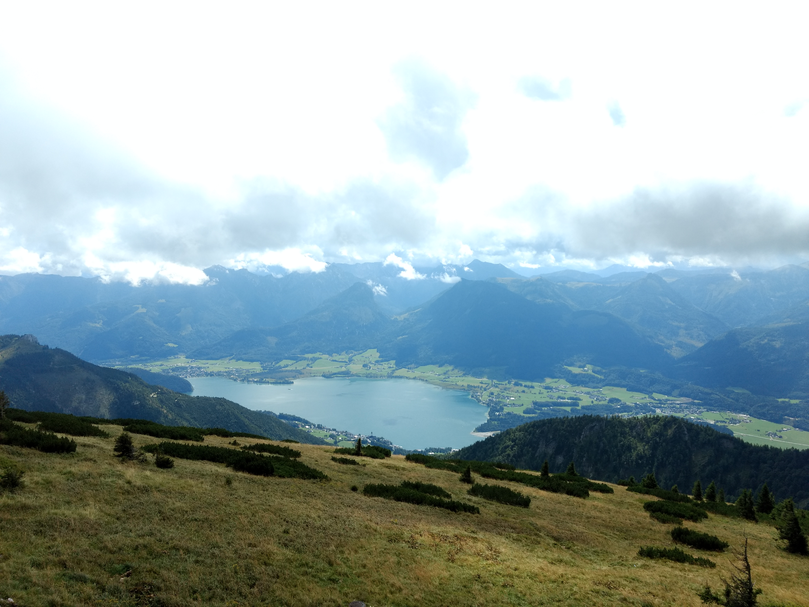
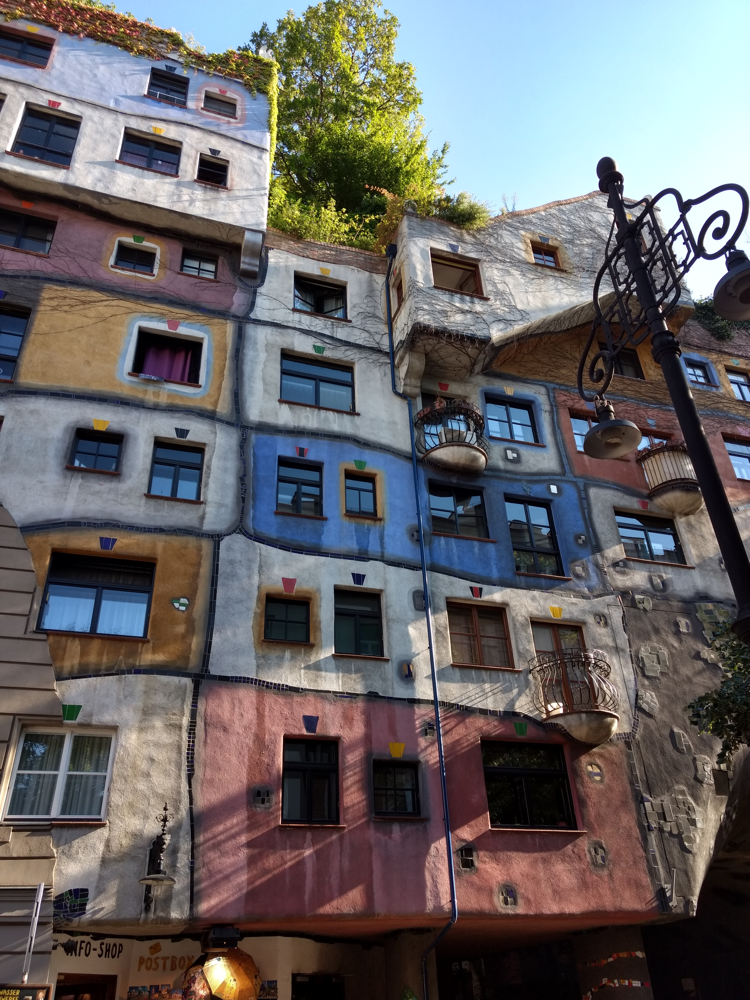
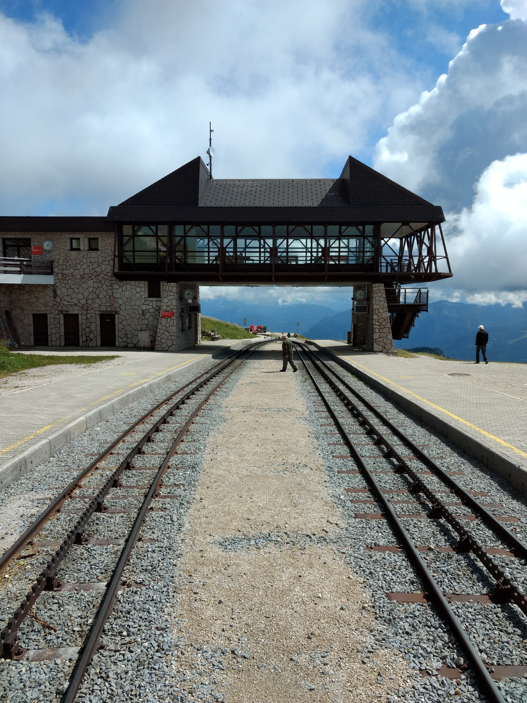
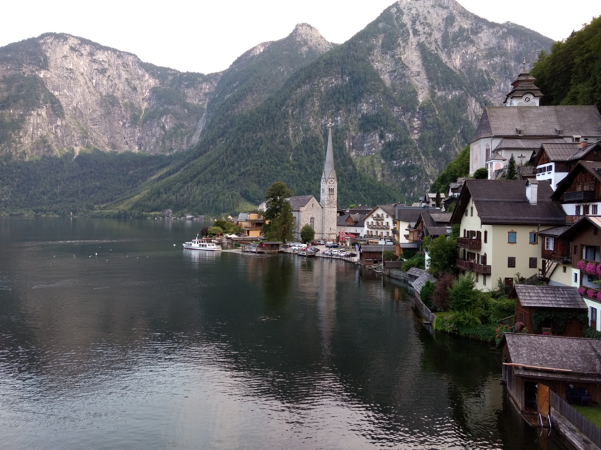
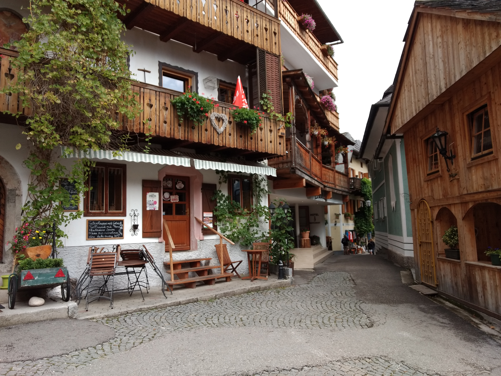
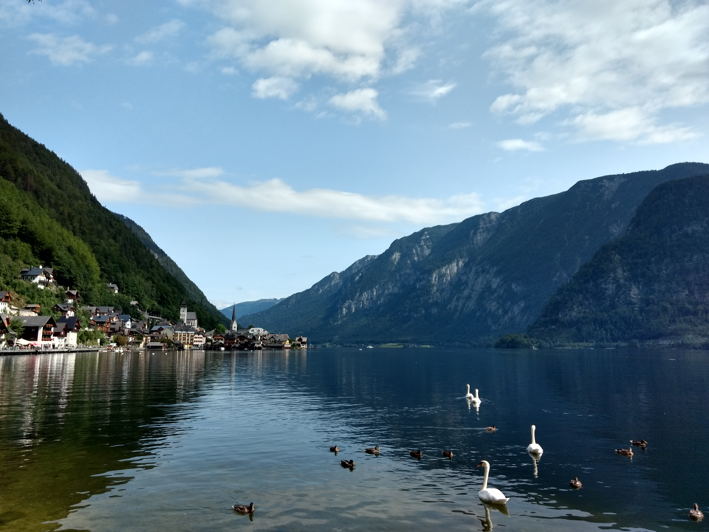

Austria
A trip to Austria was our second time visiting a country in Europe. We were mostly impressed by the views in the more remote, suburban, and foresty areas. This first half of our trip set up the joyful vibe for our next stop in the Czech Republic.





